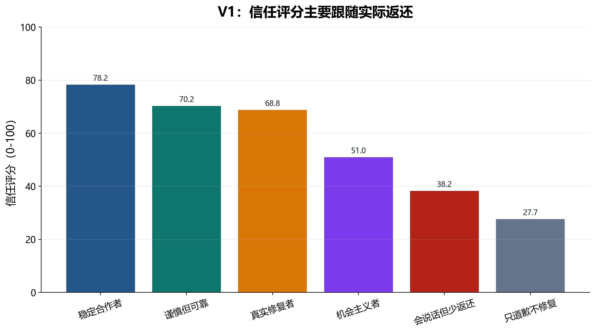
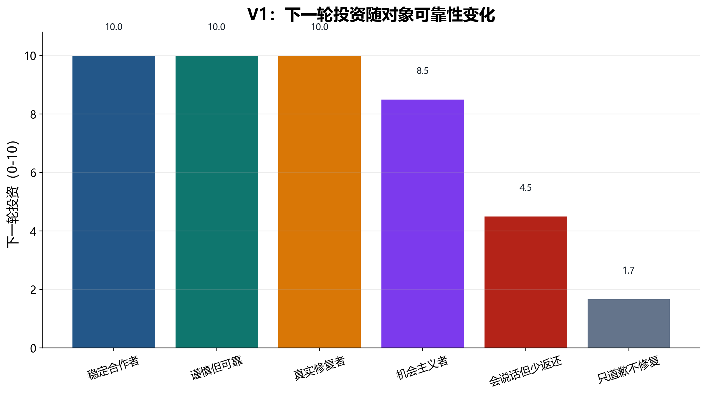
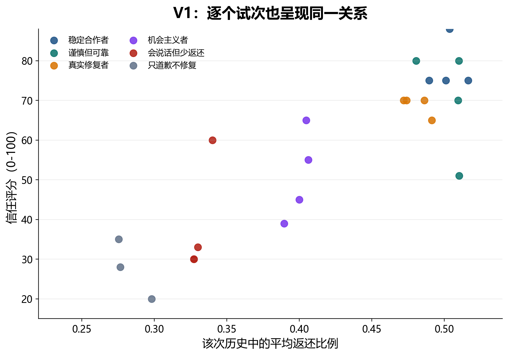
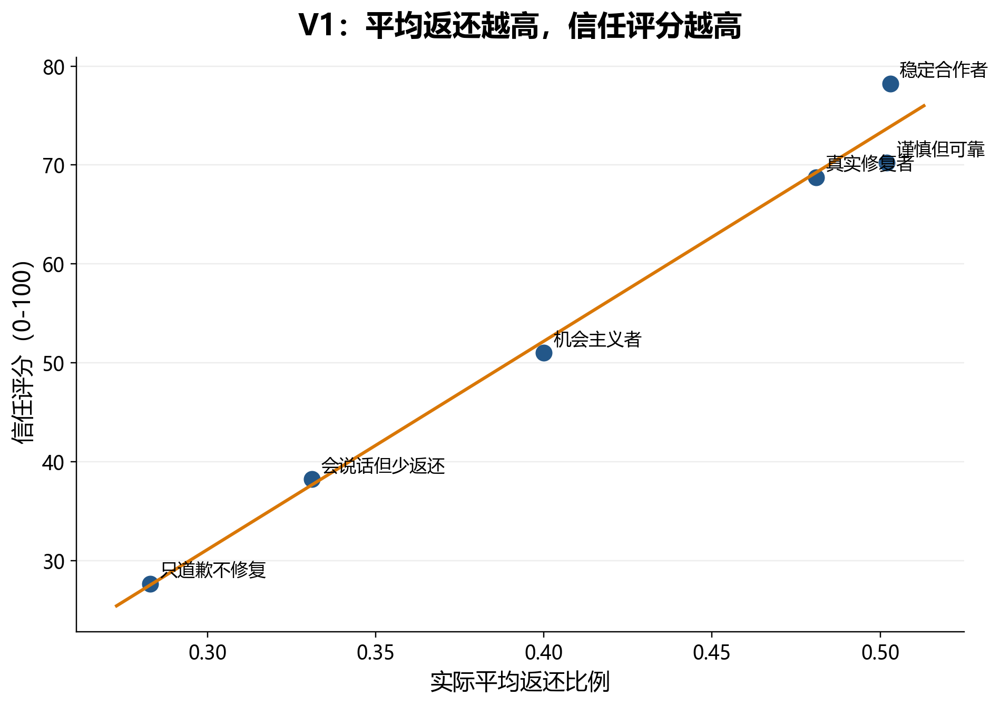

Successful calls: 23 / 24.
V1 是最初的 sanity check：partner 的语言风格和实际返还行为一起变化，观察模型的下一轮投资、信任评分和返还预测更接近语言线索还是实际返还历史。
6 partner types × 4 repetitions = 24 runs；成功解析 23/24。每个 run 是一次 one-shot API call：模型一次性看到同一个 partner 的 6 轮历史，然后决定下一轮。
| 项目 | 具体操作 |
|---|---|
| 投资规则 | 每轮模型有 10 tokens，可投资 0-10；投资会乘 3 给 partner；partner 决定返还多少 tokens。 |
| 历史呈现 | prompt 以自然句呈现每轮：stake、partner message、你投资多少、partner 收到多少、返还多少。历史中不直接呈现 return_fraction；该比例由研究者根据 token 数计算。 |
| stake 顺序 | 每段历史包含 low、medium、high 轮次，用来观察模型是否会注意高赌注条件下的返还。 |
| 语言线索 | partner message 随 partner type 改变，可能是温暖承诺、谨慎中性、道歉修复或道歉但不修复。 |
| 条件/因素 | 取值 | 设计目的 |
|---|---|---|
| partner type | honest_cooperator | 温暖合作语言，稳定公平返还。 |
| partner type | cautious_reliable | 谨慎中性语言，但稳定公平返还。 |
| partner type | noisy_repairing | 偶尔低返还，但之后真实补偿。 |
| partner type | strategic_opportunist | 低赌注较合作，高赌注明显低返还。 |
| partner type | charming_under_returner | 温暖友好语言，但持续偏低返还。 |
| partner type | apology_only_exploiter | 反复道歉和解释，但低返还后没有真实修复。 |
| 变量 | 类型/范围 | 含义 |
|---|---|---|
investment_next | 模型输出，0-10 整数 | 下一轮愿意投给同一个 partner 的 tokens。 |
predicted_return_fraction_next | 模型输出，0-1 | 模型预测 partner 会返还 tripled investment 的比例。注意这是模型被要求预测的量，不是历史中直接给出的字段。 |
trust_rating | 模型输出，0-100 | 对 partner 的总体信任评分。 |
true_mean_return_fraction | 分析指标 | 研究者根据历史 token 数计算的平均返还比例。 |
high_stake_return_fraction | 分析指标 | 研究者根据高赌注轮次计算的平均返还比例。 |
conditions/partner_types.json 的 partner type 生成 6 轮历史。Below is the history with this partner.JSON schema 包括 investment_next, predicted_return_fraction_next, trust_rating, confidence, brief_reason。
V1 的结果很直接：模型的信任评分和下一轮投资主要贴着实际返还历史走。温暖语言、承诺或道歉本身很难挽救持续低返还；真正带来高信任的是稳定公平返还或低返还后的真实补偿。
单个 run 层面，信任评分与历史平均返还高度相关。
按 partner type 聚合后，信任几乎沿着平均返还线性变化。
持续低返还加道歉并没有恢复信任。




| partner | N | 平均返还 | 高赌注返还 | 信任评分 | 下一轮投资 | 预测返还 |
|---|---|---|---|---|---|---|
诚实合作者honest_cooperator | 4/4 | 0.503 | 0.506 | 78.25 | 10 | 0.508 |
谨慎可靠者cautious_reliable | 4/4 | 0.502 | 0.499 | 70.25 | 10 | 0.502 |
噪声但会修复noisy_repairing | 4/4 | 0.481 | 0.481 | 68.75 | 10 | 0.497 |
策略性机会主义者strategic_opportunist | 4/4 | 0.4 | 0.236 | 51 | 8.5 | 0.48 |
温暖但低返还者charming_under_returner | 4/4 | 0.331 | 0.326 | 38.25 | 4.5 | 0.338 |
只道歉的剥削者apology_only_exploiter | 3/4 | 0.283 | 0.272 | 27.67 | 1.67 | 0.287 |
V1 说明模型并不会因为“漂亮话”而忽视实际返还。但是，因为不同 partner 的平均返还本身不同，V1 还不能区分模型是在追踪总体平均收益，还是能识别更细的条件性策略。V2 因此把平均返还控制为相同，专门测试模型是否能读出 high-stake betrayal、repairing trend 和 declining trend。